Building Nano Services
with OSGi Declarative Services
created by
Dirk Fauth and Peter Kirschner
EclipseCon Europe 2016
Schubartsaal
October 25, 2016 - 09:00 to 12:00
Compare bndtools and PDE 1/2
| topic | bndtools | PDE |
|---|---|---|
| Manifest Handling | generated | explicit editing |
| BSN, im-/export package versions | implicit conventions | explicit properties |
| Package Imports | bytecode-based import calcualation | manual triggered import calculation |
Compare bndtools and PDE 2/2
| topic | bndtools | PDE |
|---|---|---|
| Launch defaults | clean,hot bundle-deploy | persisted, no update |
| Bundle handling | instant bundle creation | IDE uses "virtual bundles" |
| one eclipse project | can become multiple bundles | one bundle |
PDE - create project for Service API
- select from menu:
File -> New -> Plug-in Project - provide as Project name:
examples.pde.service.api
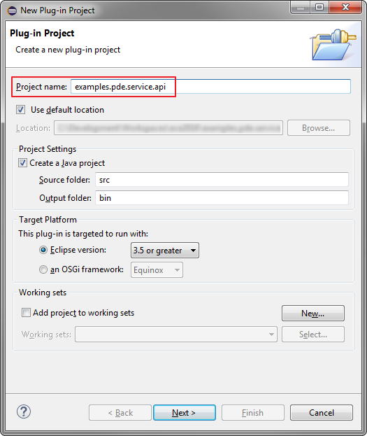
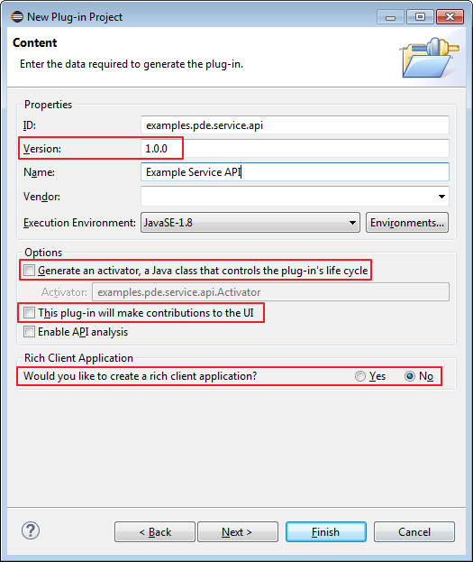
PDE - create API interface package
copy the following snippet and paste it into src folder
package examples.service.api;
public interface StringModifier {
String modify(String input);
}
PDE - export the API package
Inside the Manifest Editor on the Runtime Tab
export the package with version 1.0.0
PDE - Service API Bundle Manifest
You successfully created the Service API Bundle if your MANIFEST.MF look like this.
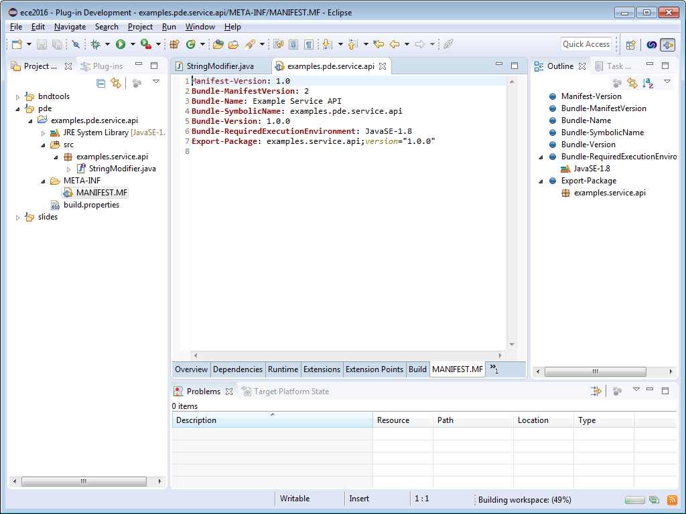PDE - create project for Service Implementation
- select from menu:
File -> New -> Plug-in Project - Project name:
examples.pde.impl.inverter
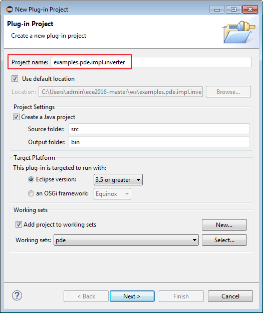
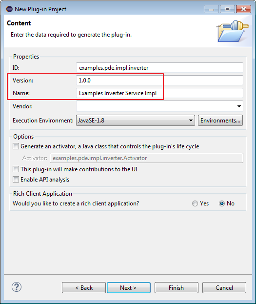
PDE - define dependencies / build path
- Import the following packages:
examples.service.api;version="[1.0.0,2.0.0)"org.osgi.service.component.annotations;\ version="1.2.0";resolution:=optional"
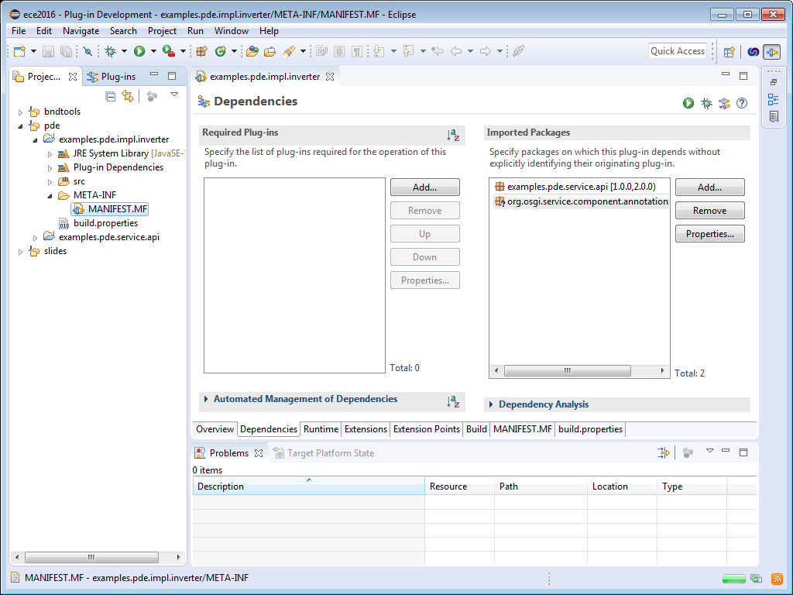
PDE - create implementation
copy the following snippet and paste it into src folder
package examples.pde.impl.inverter;
import org.osgi.service.component.annotations.Component;
import examples.service.api.StringModifier;
@Component
public class StringInverterImpl implements StringModifier {
@Override
public String modify(String input) {
return new StringBuilder(input).reverse().toString();
}
@Activate
void activate() {
System.out.println(this.getClass() + " activated");
}
@Deactivate
void deactivate() {
System.out.println(this.getClass() + " deactivated");
}
}
PDE - Implementation Bundle
You successfully created the Impl Bundle if look like this.
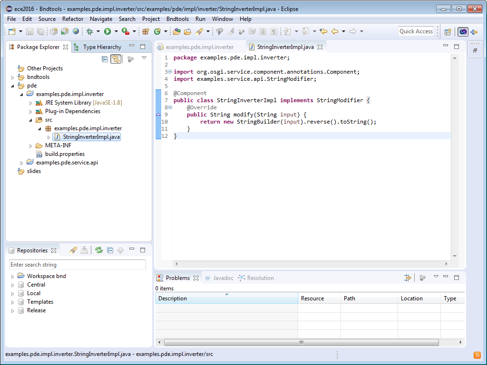 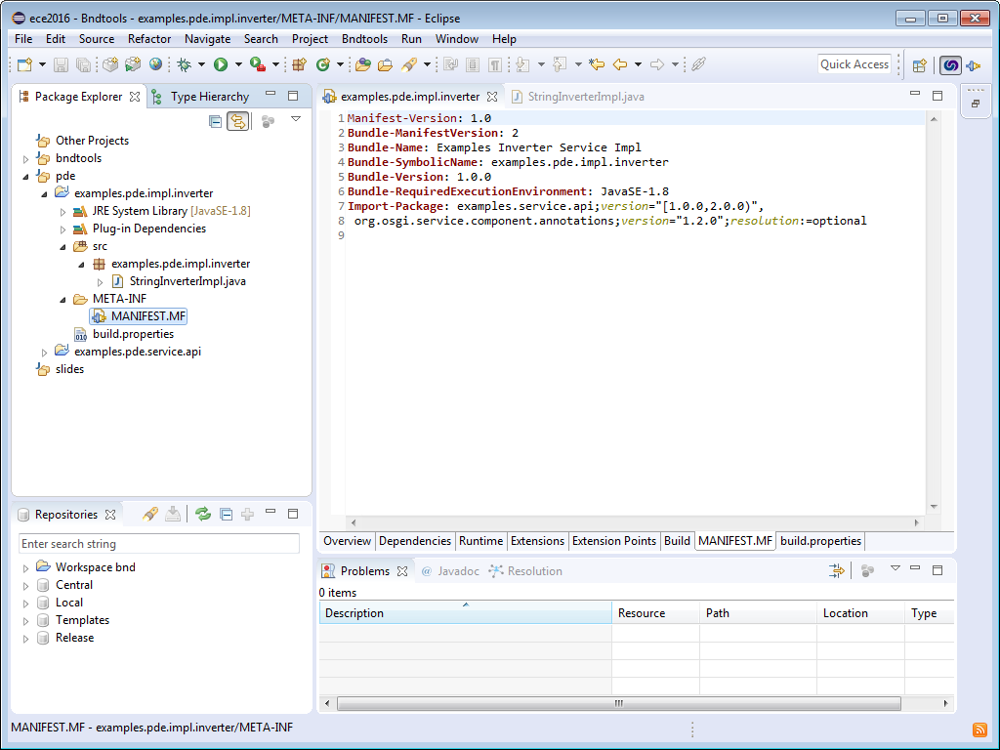PDE - create project for the consumer
- select from menu:
File -> New -> Plug-in Project - Project name:
examples.pde.command
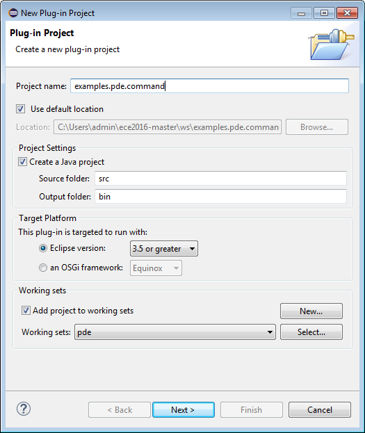
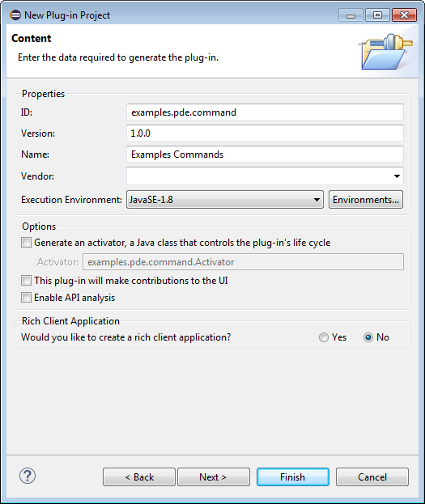
PDE - define dependencies / build path
- Import the following packages:
examples.service.api;version="[1.0.0,2.0.0)"org.osgi.service.component.annotations;version="1.2.0";resolution:=optional"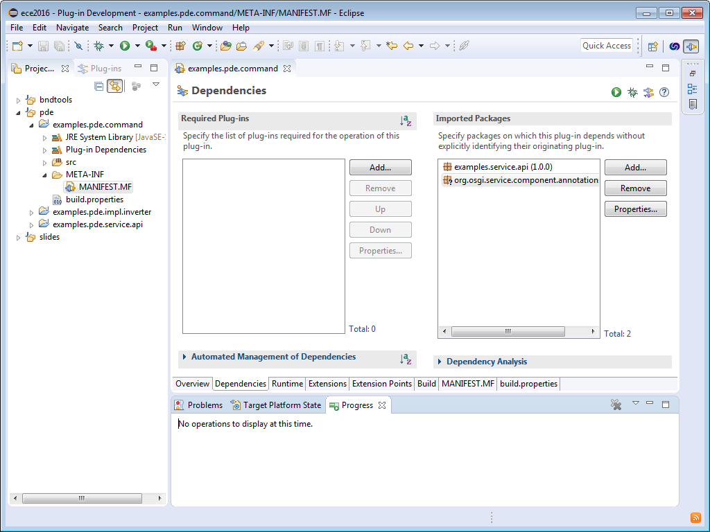
PDE - create consumer command
copy the following snippet and paste it into src folder
package examples.pde.command;
import org.osgi.service.component.annotations.*;
import examples.service.api.StringModifier;
@Component(
property = {
"osgi.command.scope" + "=zExampleInv",
"osgi.command.function" + "=modify" },
service = StringInverterCommand.class
)
public class StringInverterCommand {
private StringModifier modifier;
@Reference
void bindStringModifier(StringModifier modifier) {
this.modifier = modifier;
}
public void modify(String message) {
System.out.println(modifier.modify(message));
}
}
PDE - Consumer Bundle
Consumer Bundle successfully created if it look like this.
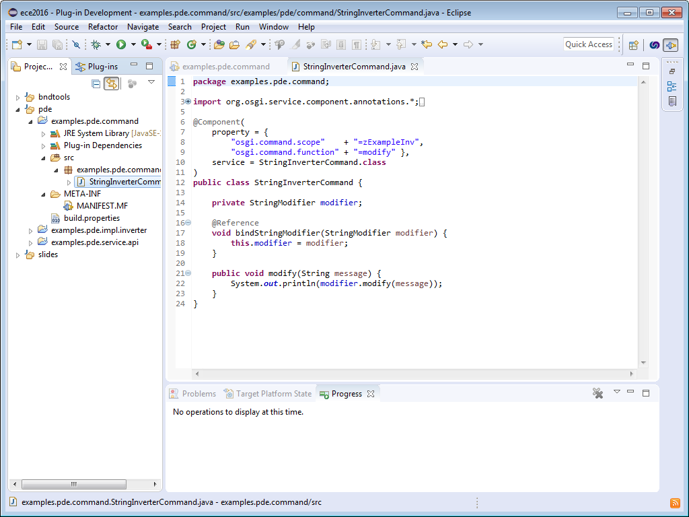 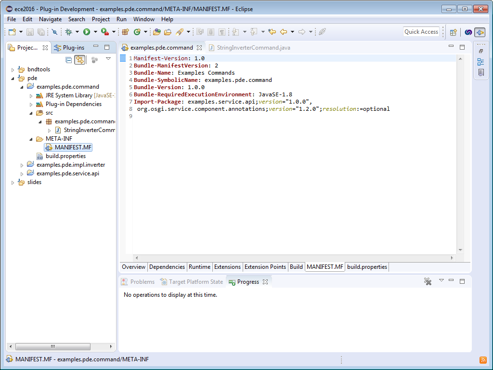PDE - @Reference - Event Strategy
update the StringInverterCommand
@Reference
void bindStringModifier(StringModifier modifier) {
this.modifier = modifier;
}
void updatedStringModifier(StringModifier modifier, Map properties) {
properties.forEach((k,v) -> {System.out.println(k + " : " + v);} );
}
void unbindStringModifier(StringModifier modifier) {
this.modifier = null;
}
public void modify(String message) {
System.out.println(modifier.modify(message));
}
PDE - create launch configuration 1/2
- select from menu:
Run -> Run configurations ... - create OSGi Framework named
simple_runtime - select the Default Auto-Start: true
- remove all and then select only the following bundles
bundle purpose examples.pde.command application service consumer examples.pde.impl.inverter application service implementation examples.pde.service.api application service api org.apache.felix.gogo.command OSGi console commands org.apache.felix.gogo.runtime OSGi console runtime org.apache.felix.gogo.shell OSGi console shell org.eclipse.equinox.console Equinox OSGi console org.eclipse.equinox.ds Equinox Declarative Services org.eclipse.equinox.util Equinox Util bundle org.eclipse.osgi Equinox OSGi runtime org.eclipse.osgi.services Equinox OSGi service interfaces
PDE - create launch configuration 2/2
- your launch should look like 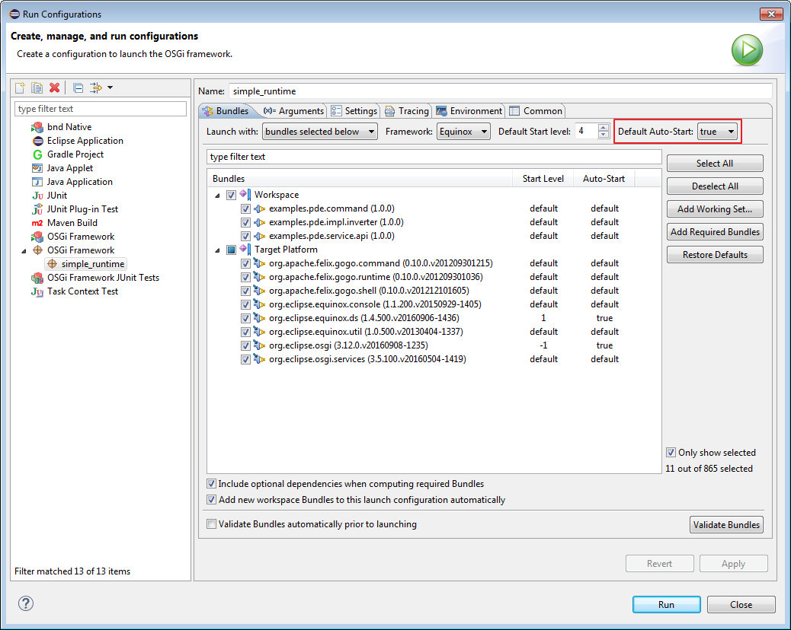
PDE - execute launch configuration
- launch the
simple_runtime - enter in the console view
modify example
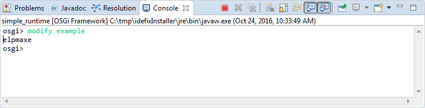
PDE - Export application bundles
- export bundles via
File -> Export ... -> Plug-in Development -> Deployable plug-ins and fragments - provide directory
C:\ece2016\equinox_oxygen_runtime
PDE - Launch standalone runtime
- open a cmd/shell window inside
C:\ece2016\equinox_oxygen_runtime - launch start.[cmd|sh]
- type in the console
modify example
bndtools - create workspace
select from menu:
File -> New -> Bnd OSGi Workspace
GitHub -> bndtools/workspace
 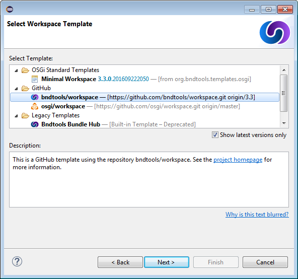
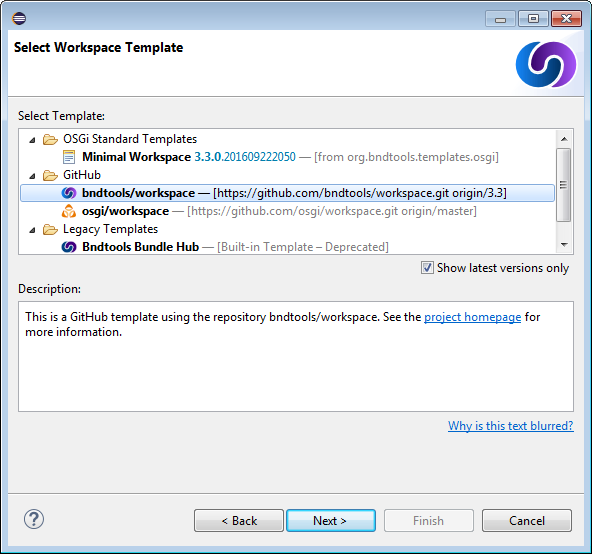

bndtools - verify workspace
The Repositories view contains entries, as shown below.

bndtools - create API project and interface package
File -> New -> Bnd OSGi Project- Project Name:
examples.bndtools.service.api - Java Package:
examples.bndtools.service.api
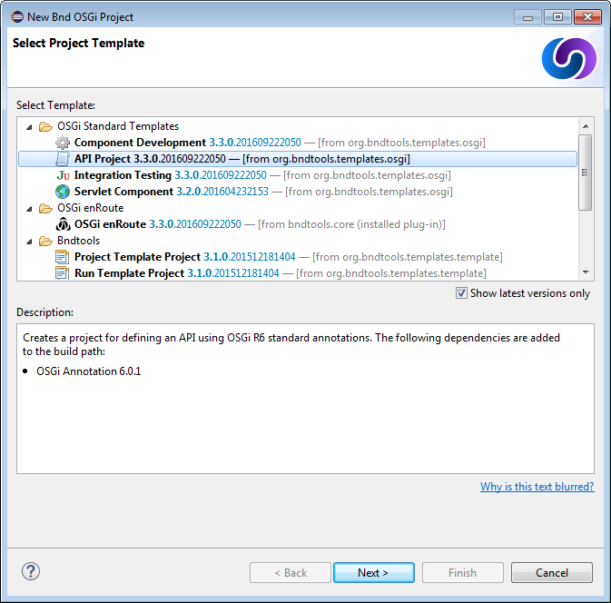


bndtools - update API interface
- delete the Example*Interface.java files in the package
- copy the following snippet and paste it into src folder
package examples.service.api;
public interface StringModifier {
String modify(String input);
}
bndtools - adding additional Manifest properties
- Inside the Bnd Editor on the Source Tab add
Bundle-Name: Example Service API

bndtools - investigate generated bundle
- you successfully created the Service API Bundle
- investigate
<prj>/generatedfolder

bndtools - create implementation project
File -> New -> Bnd OSGi Project- Project and Java Package Name:
examples.bndtools.impl.inverter
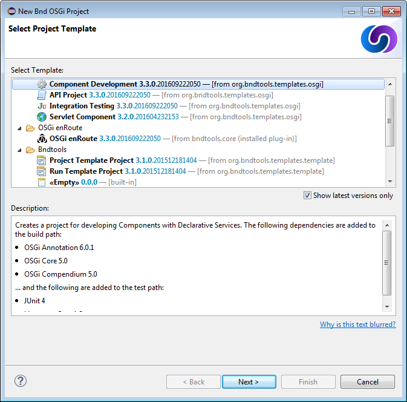
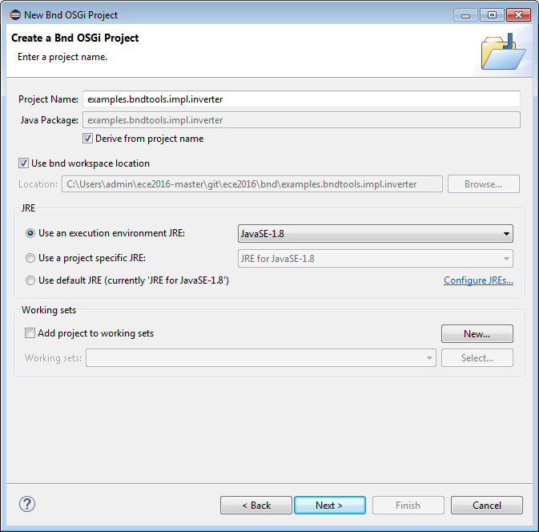
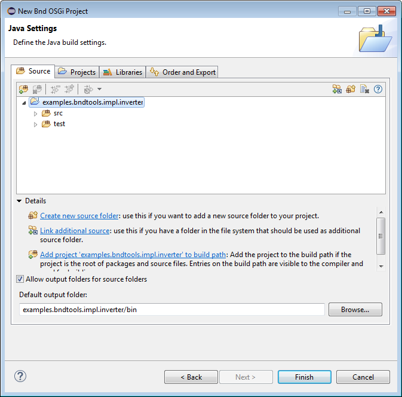
bndtools - define dependencies / build path
- Inside Bnd Editor on the Build Tab
examples.bndtools.service.api
bndtools - implementation
- delete the Example.java files in the package
- copy the following snippet and paste it into src folder
package examples.bndtools.impl.inverter;
import org.osgi.service.component.annotations.*;
import examples.service.api.StringModifier;
@Component
public class StringInverterImpl implements StringModifier {
@Override
public String modify(String input) {
return new StringBuilder(input).reverse().toString();
}
@Activate
void activate() {
System.out.println(this.getClass() + " activated");
}
@Deactivate
void deactivate() {
System.out.println(this.getClass() + " deactivated");
}
}
bndtools - investigate generated bundle
- you successfully created the impl bundle it looks like this
bndtools - create consumer project
File -> New -> Bnd OSGi Project- Project and Java Package Name:
examples.bndtools.command
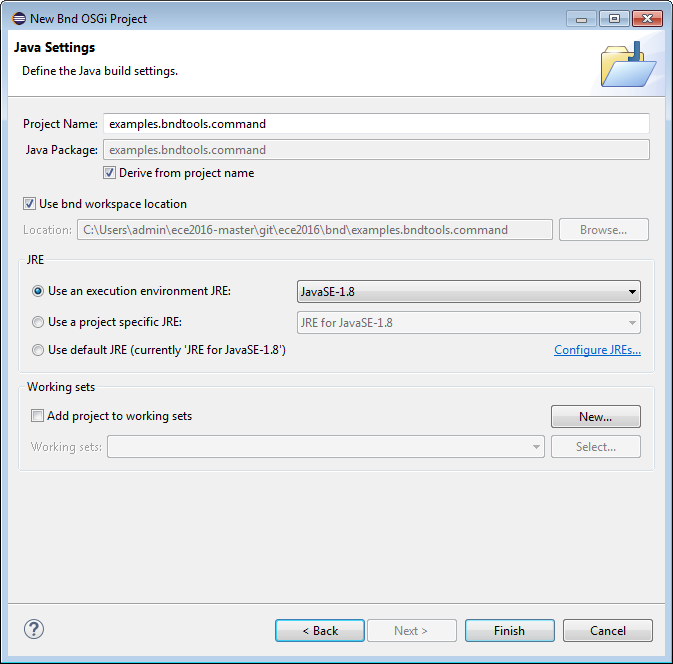
bndtools - define dependencies / build path
- Inside Bnd Editor on the Build Tab
examples.bndtools.service.api
bndtools - consumer implementation
- delete the Example.java files in the package
- copy the following snippet and paste it into src folder
package examples.bndtools.command;
import org.osgi.service.component.annotations.*;
import examples.service.api.StringModifier;
@Component(
property = {
"osgi.command.scope" + "=zExampleInv",
"osgi.command.function" + "=modify" },
service = StringInverterCommand.class
)
public class StringInverterCommand {
@Reference
private StringModifier modifier;
public void modify(String message) {
System.out.println(modifier.modify(message));
}
} bndtools - investigate generated bundle
- consumer bundle is successfully created if it looks like this
bndtools - Launch from IDE - prepare
- Open the file
launch.bndrunfrom projectexamples.bndtools.impl.inverter - Select OSGi Framework
org.apache.felix.framework;version='[5.4.0,5.4.0]' - Select Execution Environment:
JavaSE-1.8 - In the Run Requirements add the following bundles
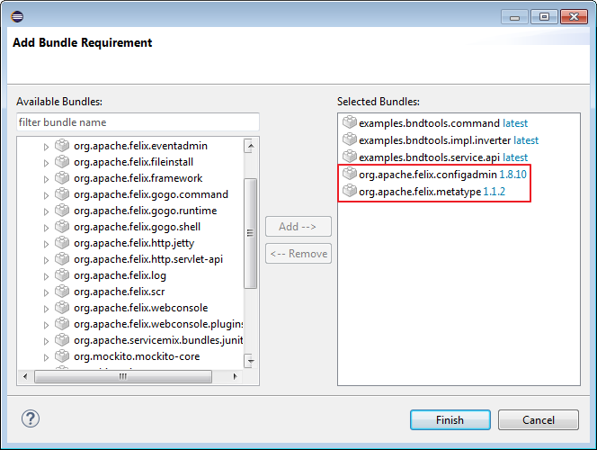bundle purpose examples.pde.command application service consumer examples.pde.impl.inverter application service implementation examples.pde.service.api application service api org.apache.felix.configadmin Apache Configuration Admin only required due to bug in Apache Felix SCR 2.0.6 org.apache.felix.metatype Apache OSGi Metatype Service only required due to bug in Apache Felix SCR 2.0.6
bndtools - Launch from IDE - resolve
- press the resolve button 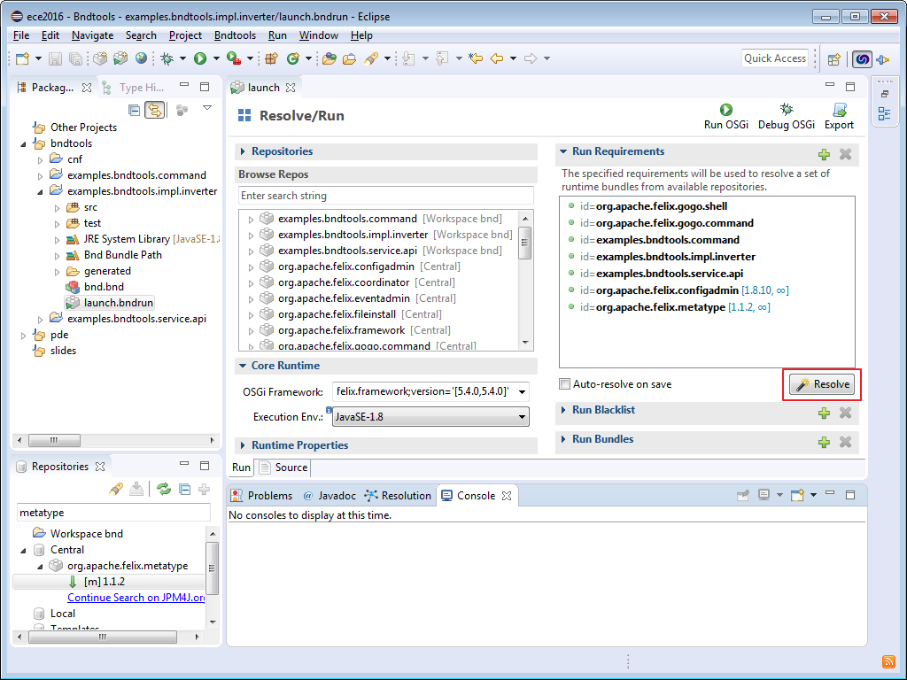 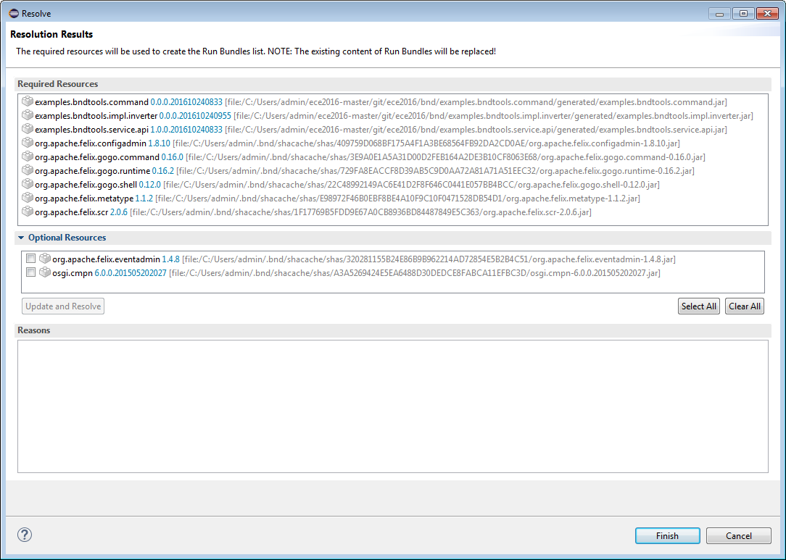
bndtools - Launch from IDE - run
- you can now launch this config via button
"Run OSGi" - enter into the console
modify example
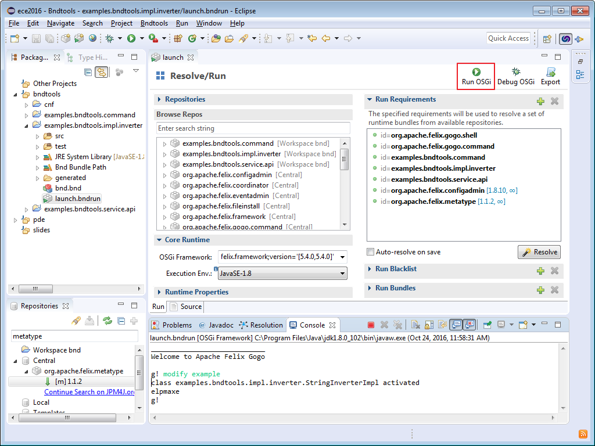
bndtools - export "MegaJar"
- start export via button
Exporton the top-right - select executable jar
- Export to JAR:
C:\tmp\inverter.jar
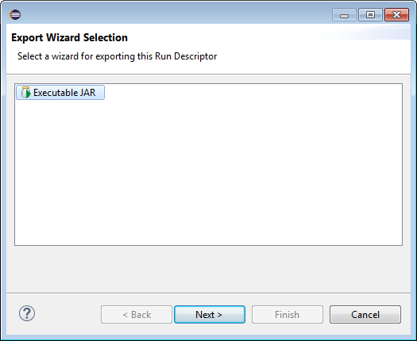
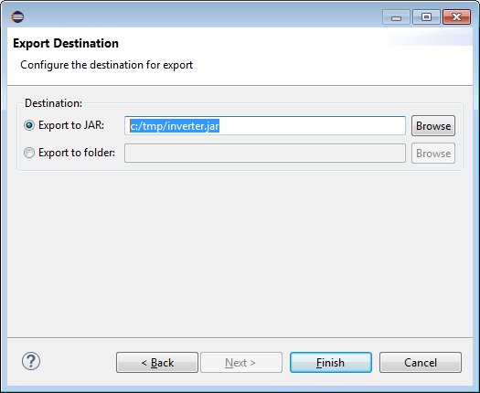
bndtools - run stand-alone "MegaJar"
- open a cmd/shell window inside
C:\tmp - launch
java -jar inverter.jar - type in the console
modify example